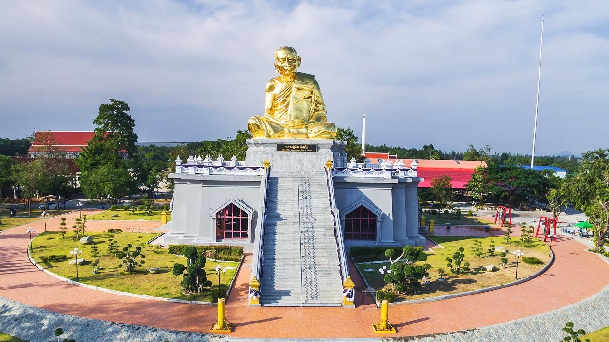
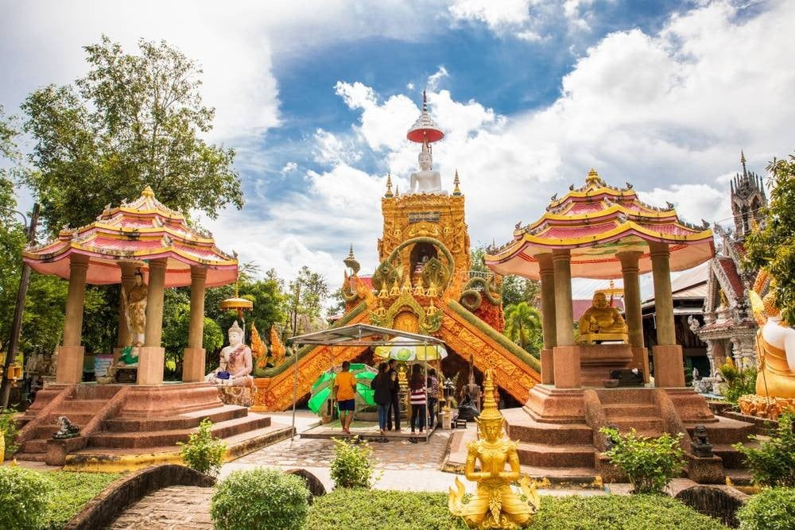
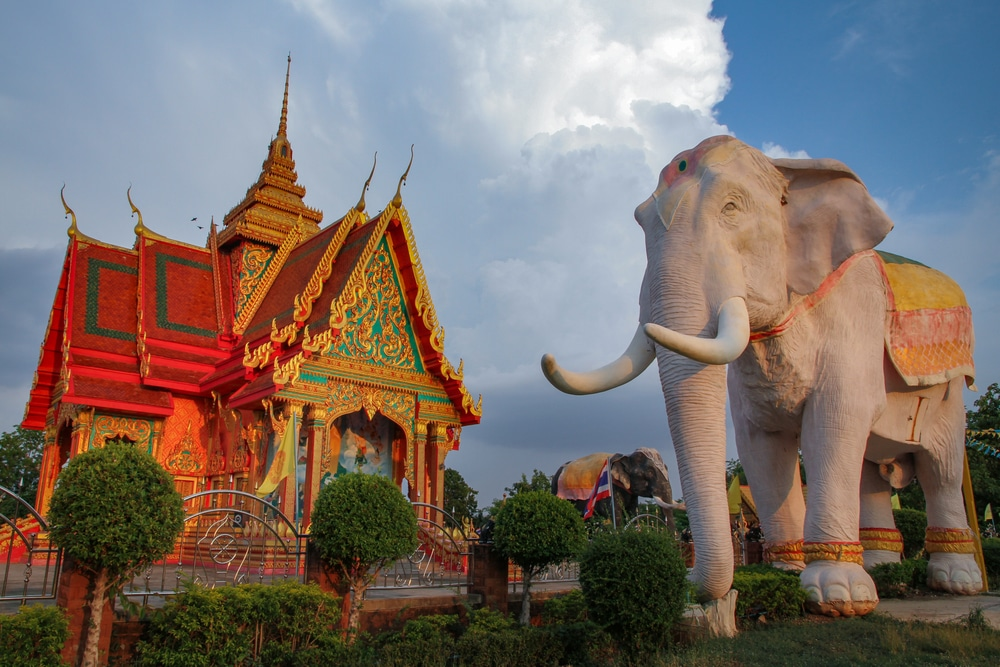
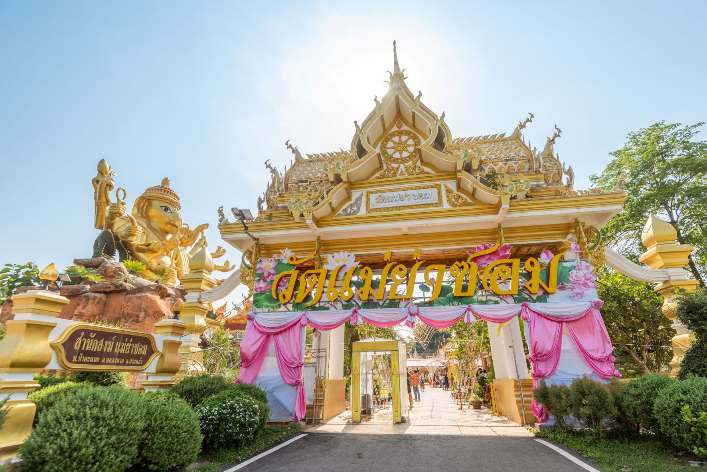

เปิดโลกแห่งศรัทธาและความงาม
สัมผัสเรื่องราวและสถาปัตยกรรมอันวิจิตรของวัดวาอารามแห่งดินแดนบูรพา
ยินดีต้อนรับสู่ทิพยสถานบูรพา
เว็บไซต์นี้จะพาคุณดำดิ่งสู่ความงดงามทางพุทธศิลป์และวัฒนธรรมอันล้ำค่าของวัดวาอารามในภาคตะวันออก
วัดที่มีข้อมูลในเว็บไซต์ของเรา
- **ฉะเชิงเทรา:** วัดโสธรวรารามวรวิหาร, วัดสมานรัตนาราม, วัดบางปรงธรรมโชติการาม
- **ชลบุรี:** วัดเขาชีจรรย์, วัดญาณสังวรารามวรมหาวิหาร, วัดห้วยใหญ่
- **ระยอง:** วัดป่าประดู่, วัดละหารไร่, วัดน้ำตกธรรมรส
- **จันทบุรี:** วัดปากน้ำแขมหนู (โบสถ์สีน้ำเงิน), วัดมังกรบุปผาราม (เล่งฮัวยี่), วัดเขาสุกิม
- **ตราด:** วัดบุปผาราม (วัดปลายคลอง), วัดไผ่ล้อม, วัดโยธานิมิต
- **ปราจีนบุรี:** วัดแก้วพิจิตร, วัดรัตนเนตตาราม, วัดแจ้ง
- **สระแก้ว:** วัดเขาฉกรรจ์, วัดแม่ย่าซอม, วัดโคกสระพานขาว
คลิกที่ชื่อจังหวัดในเมนู "ค้นหาวัด" (หากมีการทำหน้าค้นหาตามจังหวัด) หรือใช้ช่องค้นหาด้านบน
แผนที่จังหวัดในภาคตะวันออก
ภาคตะวันออกของประเทศไทย ประกอบด้วย 7 จังหวัดหลักที่มีวัดวาอารามอันงดงามและเรื่องราวทางประวัติศาสตร์รอให้คุณมาค้นหา:
- ฉะเชิงเทรา
- ชลบุรี
- ระยอง
- จันทบุรี
- ตราด
- ปราจีนบุรี
- สระแก้ว
วัดแนะนำยอดนิยม







